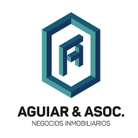
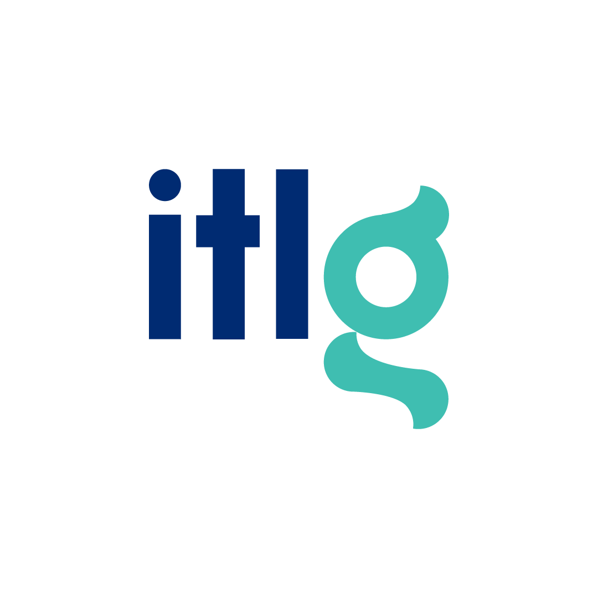
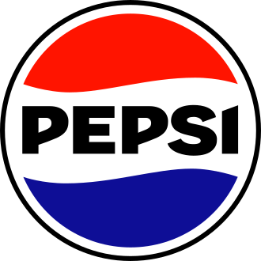

Nuestros Colaboradores







TEDxUTNCórdoba es un evento organizado de forma independiente bajo licencia de TED. Nuestro objetivo es reunir a pensadores brillantes de nuestra comunidad para dar charlas cortas y poderosas que inspiren y generen conversaciones profundas.
En el espíritu de las ideas que valen la pena difundir, TEDxUTNCórdoba presenta speakers locales e internacionales cuyas ideas y experiencias pueden cambiar actitudes, vidas y, en última instancia, el mundo.
Asistentes
Speakers
Ediciones

Descubre perspectivas únicas y soluciones creativas a los desafíos actuales.
Conecta con profesionales, emprendedores y líderes de pensamiento.
Encuentra la motivación para llevar tus proyectos al siguiente nivel.
Adquiere conocimientos de expertos en diferentes áreas del saber.